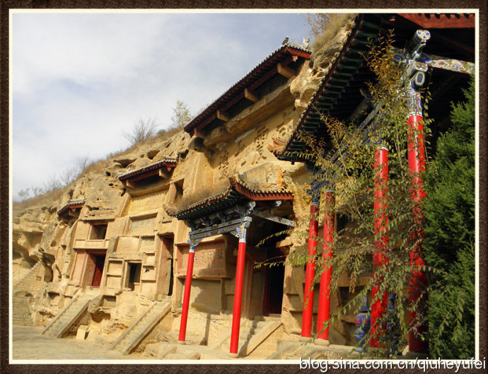
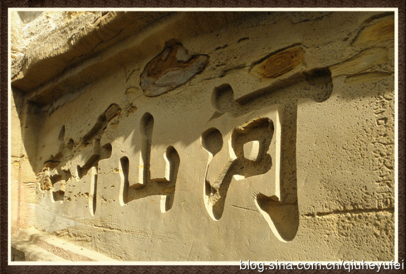

红石峡与明长城镇北台紧密相连，榆林处于大漠边关，乃是文化古城，可谓地灵人杰。 仅自明成化十七年至崇祯年间，古城计有进士9人、举人28人、武进士2人、武举181人。 他们或在当地为牧，或在外做官。旧时文官、武将、儒士来榆林，必在此地设宴，讽咏唱和。
红石峡东西石壁，窟洞、殿壁、碑石镶嵌，摩崖石刻相连。 题词、题字、碑、碣大小多达一百六十多处。 摩崖石刻字大者约6米，小者寸许，篆、隶、楷、行、草各放异彩，其笔力雄健、 字体挺劲，文采飞扬，蔚然壮观，恰似一座天然碑林。这是一座伟大的书法艺术宝库， 不说石窟内精美的佛像，仅仅欣赏书法，就是一种美的享受，就不虚此行！
